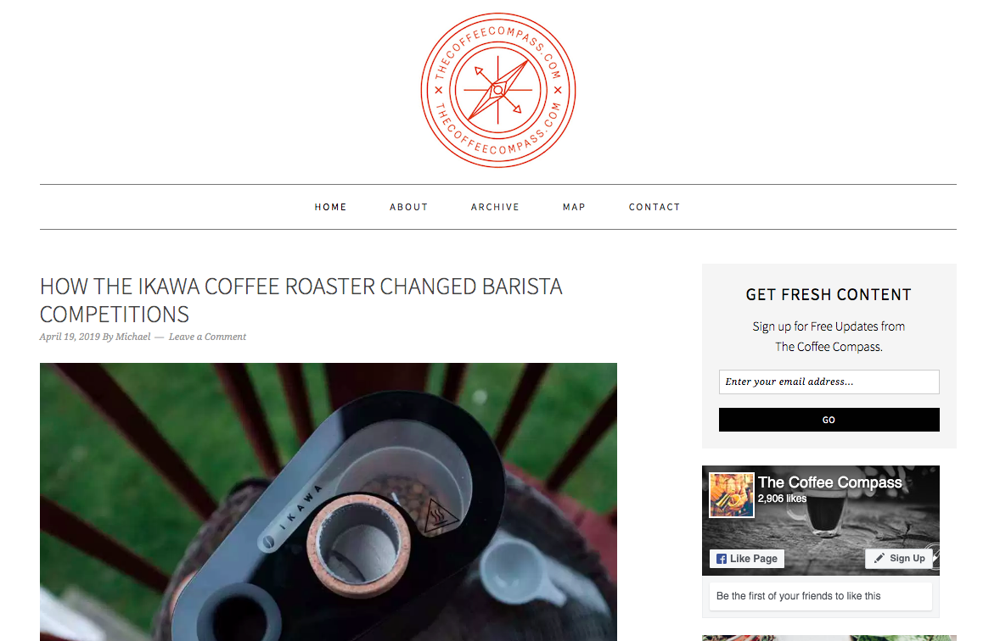
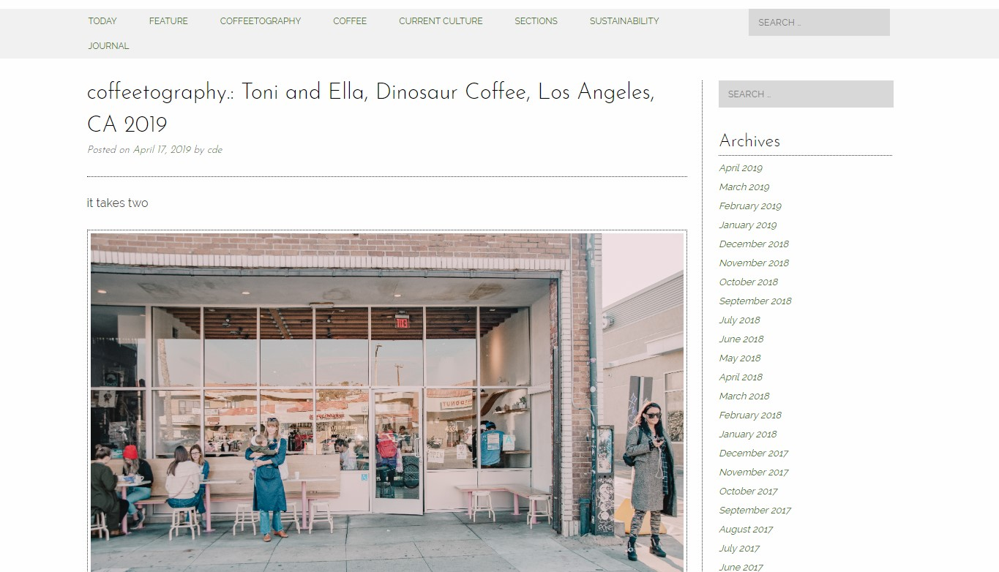

BLOGS
COFFEE MUSEUM

Coffee Museum is a delightfully unique and unconventional blog that harnesses the spirit of coffee and all that it inspires. The blog functions as a virtual museum with collections and exhibitions — the first focusing on Sao Tome island, the people, the memories, and the coffee.
COFFEE CANTANA

The catch phrase for Coffee Cantata, “Coffee: Music in a Cup,” captures creator Margarets unpretentious approach to coffee connoisseurship. Her coffee reviews are cross-referenced by geographic origin and brew method. The precise details of the extraction process, like temperature and coffee-to-water ratio, are meticulously recorded so you can repeat the experience at home. Her tasting notes are vivid and delightful and they include serving thoughts, such as how the brew pairs with milk.
COFFEE COMPAS

The Coffee Compass has a global outlook to navigating the world of craft coffee. Youll find interesting reviews of coffee shops from around the globe. One of the sites founders, Michael Butterworth, is a coffee consultant and educator, as well as a licensed Q Grader. based in Istanbul, while his founding partner, Darren Jennings — creator of the app RoastWatch — is in San Francisco.
COFFEETOGRAPHER

For webzine The Coffeetographer, the culture of independent and specialty coffee serves as a source of artistic inspiration. Sections on music, art, fashion, film, and travel all highlight the ways coffee is integral to a broad spectrum of cultural experience. The journal offers evocative, photo-illustrated vignettes and thoughts. The coffeetography section combines photography and stories of people from coffee culture, creating a worldwide sense of community.